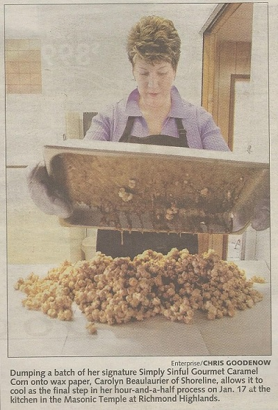

About Us
I first started making caramel corn and giving it for gifts around the holidays. I kept tweaking the recipe and everyone I knew kept telling me that I need to market my product. I didn't want to wonder "what if?" when I was sitting in my rocking chair at 70 years old, so I decided to give it a try. I figured I could always quit after a year if I didn't like it. That was in 2003 and I'm still making caramel corn today. I've never gone on a single sales call. All of my business has come from people trying and loving the product. I even went to a Golden Globe party in 2006!
- Carolyn